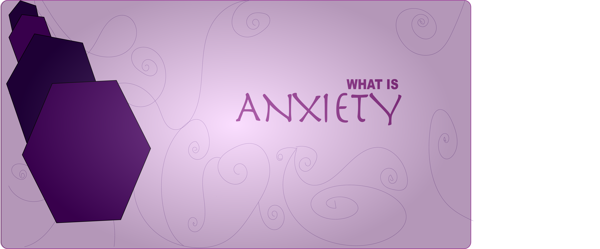

This page documents what anxiety is, how to manage anxiety, and where to go if you need help!

What is Anxiety?
Anxiety in mental health is a natural, temporary response to stress,
characterized by feelings of fear, dread, and physical tension like a racing heart.
When these feelings become excessive, persistent, and interfere with daily life,
they may indicate an anxiety disorder, such as Generalized Anxiety Disorder (GAD), panic disorder, or social anxiety.
How do I manage anxiety?
Controlling anxiety involves a combination of immediate grounding techniques,
long-term lifestyle changes,
and cognitive strategies.
Key methods include deep breathing (e.g., diaphragmatic breathing),
the 5-4-3-2-1 grounding technique, regular exercise, and limiting caffeine. Developing self-care habits, practicing mindfulness,
and potentially scheduling daily "worry time" can significantly reduce anxiety.
Why does anxiety exist in humans?
Anxiety exists in humans as a vital survival mechanism designed to detect danger and protect against threats.
It acts as an internal alarm system, inducing a "stop, look and listen" response
that heightens alertness and prepares the body to face or avoid dangers.
While functional for safety, it often misfires in modern life
due to a mismatch between our ancestral, threat-sensitive brains and current, low-immediate-danger environments.